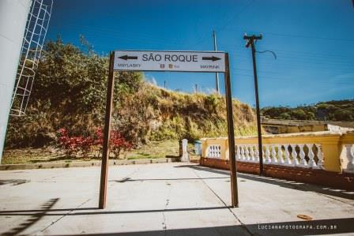

Estação Ferroviária
{kind=link}
Em 1874 foi construída a primeira Estação Ferroviária em São Roque. O primeiro trem de passageiros que chegou a São Roque no dia 10 de julho de 1875 era composto por 3 vagões pequenos. O evento foi recebido com grande festividade na cidade, houve marchinha, rojões e decoração que ia do largo da matriz até o local.
Mas com o passar dos anos foi necessário a construção de uma nova estação para atender à crescente demanda pelo serviço ferroviário na região. A nova Estação Ferroviária, construída em 1930, maior e mais moderna. Os correios e telégrafos também passaram a funcionar junto a estação o que contribuiu na evolução cultural da época, já que as malas postais passaram a chegar diariamente com jornais, revistas e livros. E se pensarmos que antes todo o transporte desse material era feito por tração animal, o quão moroso era a troca de notícias entre as regiões, podemos dizer que essa contribuição foi realmente valiosa para a população da época. A antiga estação ainda existe, próxima a estação nova e atualmente abriga uma escola municipal.
A estação teria sido fechada em 1976. Depois, chegou a funcionar durante os dias de semana, permanecendo fechada nos finais de semana. Com o passar do tempo o trecho da ferrovia deixou de realizar o transporte de passageiros, passando a contar apenas transporte de carga e por esse motivo a Estação Ferroviária foi desativada. No final da década de 90 a estação passou por uma reforma e atualmente abriga a Guarda Municipal de São Roque.
Em 2009 a antiga administração adquiriu um trem denominado “Maria Fumaça” com o intuito de alavancar o turismo. Por questões burocráticas entre as concessionarias o trem encontra-se na estação de Mairinque, mas o departamento de turismo trabalha para trazer a locomotiva até São Roque, ainda que ela não possa fazer os trajetos devido os trilhos não estarem em condições de uso, ela traria um charme a mais Estação!
{kind=link}